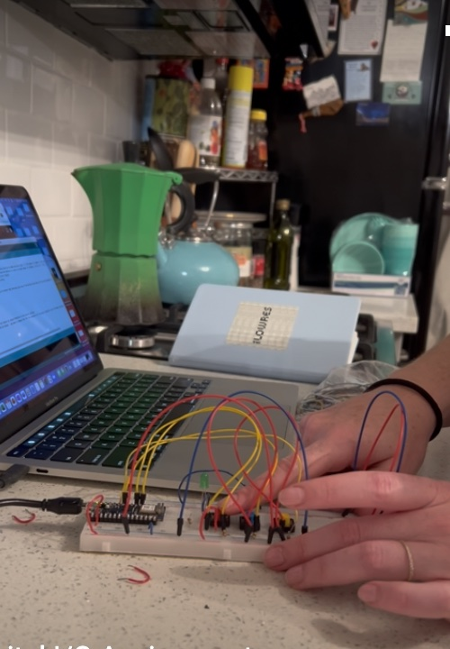
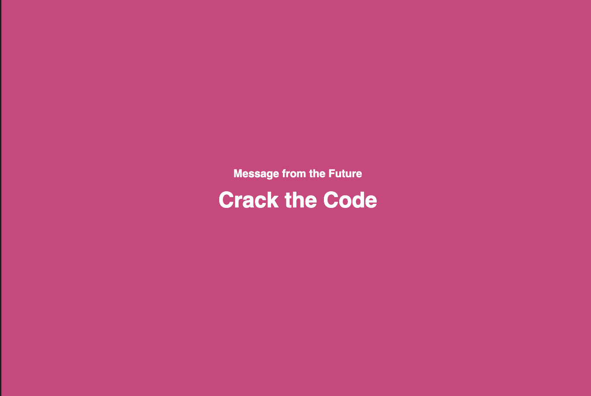

For my final Interface Lab prototype, I built upon my Digital Input/Output assignment, working with p5 and WebSerial to connect the interaction and output. The theme of the project was built off of the combination lock prompt, that worked with logic and pressing the buttons in a certain order to crack the passcode. I decided to take that theme and turn it into a Fortune Telling machine that would read you a message from the future.
My goal was to create a fun and engaging visual element in p5 to work in partnership with my Interface Lab project. I leveraged arrays to populate the the different "messages from the future" if the password was entered correctly. If the code was incorrectly entered, the user would recieve a "Try Again" message. This output was manged by conditionals in p5.
